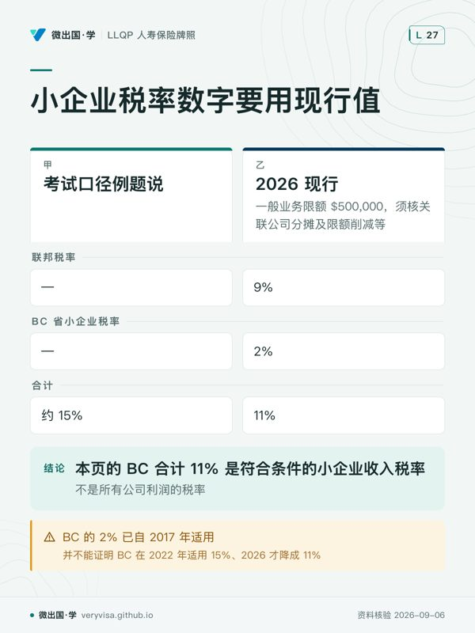

🃏 Flashcards · 3 闪卡 · 3 张 🖼 Slides · 2 幻灯 · 2 页 ✍️ Questions · 7 刷题 · 7 道
人寿保险 Life Insurance P2 稳住 P2 Hold steady
ZH EN ZH + EN
先看这一章怎么考 First, how this chapter is tested
场景辨析题：给出多股东或合伙人企业的背景（如人数变化、年龄或健康差距大），考查应选择交叉持有（cross-purchase）、公司赎回（share redemption）还是混合法（hybrid method），以及谁是投保人、受益人和买方。 Scenario distinction questions: Presenting multi-shareholder or partnership business backgrounds (such as changes in participant numbers, or substantial age and health disparities), testing whether to select a cross-purchase, corporate share redemption, or hybrid method, as well as identifying the policyowner, beneficiary, and purchasing party. 税务与成本基础机制题：对比交叉持有与公司赎回对幸存股东调整后成本基础（ACB）和未来资本利得的影响，測試是否识破“持股比例结果相同代表税务后果等价”的误区。 Taxation and cost basis mechanism questions: Comparing the impact of cross-purchase versus corporate share redemption on the surviving shareholders' adjusted cost basis (ACB) and future capital gains, testing whether candidates avoid the trap of assuming that identical shareholding percentages mean equivalent tax consequences. CDA 与公司保单资金流向题：考查公司收到免税身故给付后，哪部分能计入资本红利账户（CDA）并免税分配给股东，以及定期险或永久险的调整后成本基础（ACB）对 CDA 进账额的扣减作用。 CDA and corporate policy fund flow questions: Testing which portion of a tax-free life insurance death benefit received by a corporation can credit the capital dividend account (CDA) for tax-free distribution to shareholders, and how the adjusted cost basis (ACB) of term or permanent life insurance reduces the CDA credit. 最常丢分的陷阱（看到题干信号就警觉） Traps that cost the most marks (watch for the signal in the stem)
持股比例相同等于机制与税务相同 Assuming identical ownership percentages mean identical mechanisms and tax results 题干出现两名或多名股东讨论日后出售公司时的资本利得税，或询问总股数是否发生变化、谁是买方。 The question stem features two or more shareholders discussing capital gains taxes on a future sale of the business, or asks whether total shares outstanding change and who the purchasing party is. 免税身故金全额进 CDA Crediting the full tax-free death benefit to the CDA 题干给出公司持有保单的身故给付金额与非零的调整后成本基础（ACB），问可免税派发的资本红利增加额。 The question stem provides the death benefit of a corporate-owned policy alongside a non-zero ACB and asks for the tax-free capital dividend increase. 交叉互保保额相等即负担公平 Assuming equal coverage under criss-cross insurance creates equal premium burdens 题干特意交代股东之间存在明显的年龄差距、吸烟习惯差异或健康状况不对等，并采用交叉互保（criss-cross insurance）。 The question stem notes significant disparities in age, smoking status, or health conditions between shareholders using criss-cross life insurance. 本章考点页：导图、要点表、7 道带逐项解析的练习 →
核实日期：2026-09-06｜考纲位置：Life c2（分析可用产品，30%），sub-component 2.1，兼顾 c1（评估需求）的关键人保额估算方法；考试口径单独用一整章讲「企业寿险」，本页与 ch07（寿险与税）互补——ACB/CDA 的计算细节与算例在 ch07 已经讲过，本页只讲这些机制在企业场景里具体怎么用 。
复核周期：本页含联邦《所得税法》与联邦公司税率两类现行数字，至少按年度复核（下次 2027-01-31）；数字来源见文末「来源」。
这一章要回答的，是三个温哥华本地小老板迟早会问到的问题：「我们几个合伙人里走了一个，剩下的人怎么把股份买回来、钱从哪来？」「厂里那个谁都替代不了的老师傅万一出事，公司怎么撑过招人培训的那几个月？」「我一个人开公司，退休规划里这张保单该我个人买还是公司买？」 这三个问题背后分别对应买卖协议（buy-sell agreement）、关键人保险（key person insurance）、以及公司持有寿险（corporate-owned life insurance）三套机制，三者共用同一个核心工具——寿险死亡给付免税这条规则（ch07 已讲）——但触发场景、谁持有保单、谁最终受益完全不同。这一页帮你做到：给出一家多股东公司该选交叉持有还是公司赎回的判断依据；估算一份关键人保额该报多大；向企业主客户解释公司持有寿险身故金进公司账户后，哪部分能免税发出去、哪部分不能。
ℹ️
这一章的数字几乎全部是联邦层面的，省级变量包括公司及合伙责任、公司所得税与"配偶/同居伴侣是否必须在买卖协议上签字"这类家庭财产法条款——本页不展开（属家庭法/信托遗产范畴），聚焦寿险机制本身。真正需要双口径对照的是 考试口径 2022 年数字 vs 2026 现行数字，尤其是终身资本利得豁免（LCGE）——这是本模块证据链最完整的一处"考试口径数字已确认过期"案例，第二节详细展开。
一、制度设计与底层逻辑：企业为什么要为"人"买保险 本节回答 This section answers 企业身故三大冲击、三种组织形式差异与四类商业寿险需求。 Understanding three quantifiable death impacts on business, distinctions across three legal structures, and four commercial life insurance needs. 本章考题 1 Question 1
企业买寿险，保护的从来不是那个人本身，而是企业因为失去这个人而必然发生的财务损失 。考试口径把身故对企业的冲击拆成五类，但真正决定要不要买保险、买多少的，是其中三类可以用钱量化的冲击：
技能损失（loss of skills） ：一个关键人身故，企业的产量、质量、客户信心都可能下滑，而找到并培养出同等水平的替代者需要时间和真金白银——这段"空窗期"的成本，正是关键人保险要覆盖的缺口。
债权人催收（creditor demands） ：多数商业贷款是随时可催收贷款（demand loan）——银行没有义务等到约定还款日才要钱，贷方可按约提出还款要求，但须满足通知等适用条件；即使借款人未违约也可能被催收，不能把 demand 理解为没有任何通知便立刻执行。这条机制常被低估：很多企业主以为贷款有固定还款期限，实际上银行的"随时可催收"条款让关键人身故的冲击直接从"经营问题"升级成"流动性危机"。
资本利得税（capital gains tax） ：ITA s.70(5) 对资本财产一般规定死亡前按公允市值视同处置，配偶及符合条件的农渔业等有不同展期规则，企业股权如果这些年大幅增值，执行人可能被迫卖掉部分股权来缴这笔税——这也是本章第二节要展开的 LCGE 机制存在的理由。
这三类冲击，法律后果各不相同但共享同一条制度逻辑：企业组织形式决定了冲击有多深 。独资企业（sole proprietorship）在法律上与业主是同一个实体，业主身故时企业本身没有独立的调整后成本基础（ACB）可以单独处置或继承，企业资产直接随业主遗产一并视同处置——冲击最直接、最难缓冲。合伙企业（partnership）的合伙权益本身有 ACB、可以买卖继承，但BC 普通合伙人的一般债务责任依 Partnership Act s.11 为共同责任，死亡后遗产对未清偿债务还受法定顺位限制；违法行为等的连带责任另见 s.14。有限合伙需至少一名一般合伙人，LLP 又有独立保护与例外，不能把所有合伙人写成同一责任。公司（corporation）是独立法律实体，股东原则上不对公司债务负责（除非本人提供了个人担保，或作为董事对公司代扣未缴的税款负连带责任），股权有独立 ACB，股东身故视同处置这份股权（而不是公司本身的资产）——因此要先区分买的是公司股份还是合伙权益；买卖协议同样可用于合伙，RBC 官方说明也同时使用 partners 与 shareholders。
可保利益在企业场景怎么成立 ：BC 法一般在合同生效时要求可保利益，但 s.45(2) 对团体保险或被保险人书面同意设有例外，核心判断标准是"投保人会不会因为被保险人身故而遭受实际的经济损失"。在企业场景里，这条规则以几种具体关系成立：企业对其关键员工/关键股东有可保利益（因为身故会造成考试口径列出的那几类财务损失）；债权人对债务人有可保利益（保障额度仍须经财务核保，不把特定债权额写成所有个人寿险的法定绝对上限）；生意合伙人之间互相有可保利益（因为一方身故会触发买卖协议下的付款义务，也会造成合伙权益结构的实质冲击）。这条规则的实务意义在于：保额不能凭空定得很高再去找理由，必须能证明这份保额与企业实际可能遭受的经济损失之间存在合理对应关系，保司核保时会要求提交财务资料佐证。
企业购买寿险的四类需求
节末检索小测 · 先别往回翻，凭记忆作答 Quick recall check: answer from memory before scrolling back
Marcus operates a catering business as a sole proprietorship, while his sister Elena owns 100% of the shares of an incorporated graphic design studio. Neither has a spouse. If both Marcus and Elena were to die unexpectedly today, how would the tax treatment of their business interests differ upon death?
Marcus 以独资企业形式经营一家餐饮服务店，而他的姐姐 Elena 持有一家注册为有限公司的平面设计工作室 100% 的股份。两人都没有配偶。如果 Marcus 和 Elena 今天不幸意外身故，他们的企业权益在身故时的税务处理有何不同？
a Marcus's business has no separate ACB, so its assets are deemed disposed of with his estate, while for Elena only her shares, not the company's own assets, are deemed disposed of. ✓ 正确。独资企业（sole proprietorship）在法律上与业主是同一实体，没有独立的调整后成本基础（adjusted cost basis, ACB），身故时企业资产随遗产直接视同处置；公司（corporation）是独立法律实体，股权有独立 ACB，股东身故视同处置的是股份而非公司本身的资产。 Correct. A sole proprietorship is legally identical to its owner and has no separate adjusted cost basis (ACB), so business assets are deemed disposed of with the owner's estate at death. A corporation is a distinct legal entity with a separate ACB for its shares, meaning the deceased shareholder's shares are deemed disposed of, not the corporation's underlying assets.
b Both businesses are treated as separate legal entities at death, meaning only the ownership units of the sole proprietorship and the shares of the corporation are deemed disposed of at fair market value. ✗ 错误。独资企业并不是独立法律实体，也没有独立的调整后成本基础（ACB）可供单独处置或继承，这是把独资企业与公司的法律属性混为一谈的陷阱。 A sole proprietorship is not a separate legal entity and possesses no distinct adjusted cost basis (ACB) to be transferred or inherited independently, confusing a proprietorship with a corporation.
c Elena's estate becomes personally liable for all ordinary trade debts of the graphic design corporation, while Marcus's estate is shielded from business creditors once his sole proprietorship ceases operations. ✗ 错误。颠倒了责任规则：公司股东原则上不对公司一般债务负责（除非提供个人担保等），而独资企业与业主是同一实体，业主遗产仍须面对企业债务。 Reverses liability rules: corporate shareholders are generally shielded from ordinary corporate debts (absent personal guarantees), whereas a sole proprietor's estate remains fully exposed to business liabilities.
d Marcus's sole proprietorship automatically qualifies for a tax-deferred rollover to his adult children, whereas Elena's corporate shares must be liquidated immediately by the corporate creditors. ✗ 错误。依据 ITA s.70(5)，一般资本财产在死亡前按公允市值视同处置（配偶或符合条件的农渔业财产除外），独资企业资产传给成年子女并无自动免税展期。 Under ITA s.70(5), capital property is deemed disposed of at fair market value immediately prior to death (absent a spousal rollover or qualifying farm property); passing sole proprietorship assets to adult children offers no automatic tax-deferred rollover.
看答案与每个选项的解析 Show the answer and why each option is right or wrong 答案 Answer ：a
二、2026 现行政策与数字：终身资本利得豁免（LCGE）与小企业税率 本节回答 This section answers LCGE 双口径数值与资格、小企业税率差及关键人保额估算法。 Distinguishing LCGE dual-benchmark figures and eligibility, small business tax differentials, and key person coverage valuation methods. 本章考题 2 Question 2
2.1 终身资本利得豁免（LCGE）：考试口径数字已确认过期（三态表）
企业主处置合格公司股权时能用来抵消资本利得的终身资本利得豁免，是本模块证据链最完整的一处"考试口径数字过期"案例——这条已在 ch07 讲过一次，这里聚焦它在企业股权处置 这个具体场景下怎么用：
以谁为准 ：企业主处置合格 CCPC 股份时，实务按 $1,275,000 计算；考试口径数字若出现在题库旧题里，仅作历史对照。
考试口径例题重算 （沿用考试口径"资本利得 $2,200,000、扣 LCGE 后按 50% 计入率、45% 边际税率"这套计算模型，只换 LCGE 数值，人物与具体数字为教学示范；假设全部符合资格、额度未用、无其他限制，未计 AMT，不能作为实际税额报价）：
同一笔资本利得，只因为 LCGE 从 2022 年的考试口径数字换成 2026 年现行数字，税负就少了 $81,308 ——这不是一道"背哪个数字"的题，是一条值得对企业主客户专门讲一遍的现行政策变化：如果客户几年前从别处听说过 LCGE 是"九十几万"，现在应该更正为"一百二十七万五千"。
资本利得计入率 ：现行 ITA s.38(a) 的一般计入率仍为一半，另有合格捐赠等例外。2024 提案可作历史背景，不能作为证明现行法的唯一来源（laws-lois.justice.gc.ca ）。
2.2 小企业税率差：考试口径例题的机制长青，数字要用现行值
跨模块的税务原理考试口径与本模块共用一个案例母题：个体户按个人边际税率纳税，公司按更低的小企业税率纳税，税率差本身就是企业主选择以公司形式经营、并进而考虑"公司持有寿险"这条路径的经济动因之一。
以谁为准 ：本页的 BC 合计 11% 是符合条件的小企业收入税率，不是所有公司利润的税率。考试口径用约 15% 示范，并不能证明 BC 在 2022 年适用 15%、2026 才降成 11%；BC 的 2% 已自 2017 年适用。比较个人和公司持有寿险时，还须计入个人提款税、业务限额、资金是否留在公司及保单后续分配。公司当期税率较低，不能单凭这一点判定整个策略永久节税。
2.3 关键人保额怎么估算：三种常见方法
考试口径本身没有给出一个法定公式，保额最终由保司核保时结合财务资料判断是否合理，但行业里通常用三种思路互相印证：
收入/薪酬倍数法 ：按该关键人年薪酬的若干倍数估算（本页不设统一倍数，须以具体保险人的财务核保指南为准），逻辑是"需要多少年的替代成本缓冲"。利润贡献法：估算该关键人个人经手或主导的业务对企业毛利润的贡献份额，乘以预计需要多长时间才能培养出等效替代者。替代与债务保障法：直接加总——招聘猎头费、新人培训期间的双薪成本、以及该关键人个人担保或与其信用直接挂钩的企业贷款余额。三种方法算出的数字通常不会完全一致，代理人应解释三种估计覆盖的损失、时间范围及可能重叠，选择有财务依据的申请额度，而不是只取中间数，因为核保员最终会要求企业提交财务资料佐证保额的合理性，凭空报出一个远超企业实际规模的保额会被核保打回或大幅调降。
节末检索小测 · 先别往回翻，凭记忆作答 Quick recall check: answer from memory before scrolling back
A manufacturing firm wants to determine an appropriate face amount of key person life insurance for its lead robotics specialist. The specialist earns an annual salary of $150,000. The firm's gross profit is $2,000,000 per year, of which the specialist's work directly accounts for 25%, and it would take 2 years to find and train an equivalent replacement. Using the profit contribution method, what is the estimated coverage need?
一家制造企业希望为其首席机器人专家确定合适的关键人寿险保额。该专家年薪为 $150,000。公司年毛利润为 $2,000,000，其中该专家直接负责的业务贡献占 25%，预计找到并培养出同等水平的替代者需要 2 年时间。若采用利润贡献法估算，所需的保障额度是多少？
a $300,000, calculated by multiplying the specialist's annual salary of $150,000 by the 2-year replacement period. ✗ 错误。按年薪乘以倍数属于收入/薪酬倍数法（income/salary multiple method）的思路，而非利润贡献法。 Multiplying annual salary by a multiple reflects the income/salary multiple method rather than the profit contribution method.
b $500,000, representing a single year's share of the firm's gross profit attributable to the specialist without factoring in the replacement timeframe. ✗ 错误。利润贡献法（profit contribution method）不仅要算关键人对年毛利润的贡献份额（$2,000,000 × 25% = $500,000），还必须乘以培养等效替代者所需的年限（2 年）。 The profit contribution method requires calculating the key person's annual gross profit contribution ($2,000,000 x 25% = $500,000) and multiplying it by the years required to recruit and train an equivalent replacement (2 years).
c $1,000,000, calculated by multiplying the $2,000,000 annual gross profit by the 25% contribution share and the 2-year replacement period. ✓ 正确。利润贡献法（profit contribution method）估算该关键人主导业务对企业毛利润的贡献份额（$2,000,000 × 25% = $500,000/年），再乘以培养等效替代者所需的时间（2 年），得出 $1,000,000。 Correct. The profit contribution method calculates the key person's share of annual gross profit ($2,000,000 x 25% = $500,000 per year) and multiplies it by the time required to find and train a replacement (2 years), yielding $1,000,000.
d $650,000, determined by taking the mandatory statutory average of the salary multiple and a single year's gross profit share. ✗ 错误。考试口径并无法定公式要求取不同方法的平均值，核保时须解释各方法覆盖的损失并提交财务资料佐证。 The exam standard does not mandate averaging the results of different valuation methods; underwriting requires justifying specific economic losses with supporting financial statements.
看答案与每个选项的解析 Show the answer and why each option is right or wrong 答案 Answer ：c
三、实务流程：三种资金结构怎么落地 本节回答 This section answers 买卖协议四要素、三种资金结构税务后果与 CDA 分配机制。 Mastering the four buy-sell elements, tax consequences of three funding structures, and CDA distribution mechanisms. 本章考题 3 Question 3
3.1 买卖协议为什么必须有资金支持
一份买卖协议（buy-sell agreement）本身只是一纸约定谁买、谁卖、什么价钱，如果没有资金来源，这份协议在真正需要执行的那一刻就是空话——考试口径把这个道理拆成四个必须同时成立的条件：保证有买家（guaranteed buyer） ——不用临时找人接盘；保证价格（guaranteed value）——事先约定好定价方式，避免家属与幸存股东就价格反复拉扯；强制出售（mandatory sale）——身故一方的遗产必须按约定卖出，幸存方也必须按约定买入，双方都没有反悔空间；保证资金（guaranteed funding）——这是四项里最关键的一项，寿险正是解决这一项的最可靠工具，因为身故金到账的时间点恰好与需要付款的时间点吻合，不依赖企业当时的现金流状况。
3.2 买卖协议三种资金结构对照
图：买卖协议两种持有结构——股东人数与成本基础决定两种结构的主要差异
选哪一种，主要看股东人数与健康年龄差异 ：两个股东时交叉持有最简单直接；股东数量三个以上，交叉持有需要的保单数量会迅速变得难以管理，公司统一持有（赎回法或混合法）更省事；如果股东之间年龄或健康状况差异很大，交叉持有会导致保费负担严重不对等（下面第七节详细讲这个陷阱），这也是股东数量或健康差异大的企业更倾向于选择公司持有保单的现实原因。
3.3 公司持有保单与资本红利账户（CDA）：机制一句话，算例见 ch07
公司作为受益人收到的寿险身故金，第一步和个人受益人完全一样——全额免税 进入公司账户，这条免税定性不因受益人是公司而改变（ch07 第一节已详细讲过法律根据）。但企业场景多一步：这笔免税身故金里，对符合条件的私人公司，该笔给付扣适用 ACB 等后的金额可增加 CDA；完成有效资本红利选择后，可向加拿大税务居民股东按规则免税分配；等于 ACB 那部分虽然公司拿到手上同样不用交税，但不能计入 CDA，本身不增加 CDA，后续分配还须看公司整体 CDA 余额及其他合法支付性质。定期险通常没有 CSV，但仍可能有非零 ACB；定期与永久险都须用实际 ACB 等数据计算，不能把无 CSV 当成近乎全额入 CDA 的保证——这正是企业主决定用定期险还是永久险做买卖协议融资时，除了保费高低之外，另一条真正影响税务效率的考量（ACB 具体怎么算、CDA 完整算例，见 ch07 第三节 3.5）。
企业向银行申请贷款时，如果银行要求转让一份关键人保单作为担保，这笔转让属于担保转让（collateral assignment） 而不是绝对转让——符合 exempt 条件时保内增长继续递延，不触发处置（ch07 第三节 3.1 已讲过这条区分），若属于受限金融机构在该借款中要求的抵押，且贷款利息满足法定扣除条件，可在当年保费与 NCPI 较小者中扣除合理对应期间欠款的部分；不能只取 NCPI，更不能把比例倒写成保额除贷款额。
节末检索小测 · 先别往回翻，凭记忆作答 Quick recall check: answer from memory before scrolling back
Two equal shareholders of a private corporation have a lawyer draft a buy-sell agreement. The agreement binds the deceased shareholder's estate to sell, obligates the surviving shareholder to buy, and sets a clear valuation formula for the shares. However, neither the corporation nor the shareholders have set aside funds or purchased life insurance. Why is this buy-sell agreement still vulnerable to failure?
一家私人公司的两名等额股东请律师起草了一份买卖协议。协议规定亡故股东的遗产必须出售股份，幸存股东必须买入，并设定了清晰的股份定价公式。但公司和股东都没有预留资金或购买寿险。为什么这份买卖协议在执行时仍然极易失败？
a Because a buy-sell agreement is legally void unless the corporation's lender also signs it as a co-owner of the shares being sold. ✗ 错误。买卖协议的有效性并不要求贷款人成为股份共有人，核心缺陷在于缺少资金来源。 Enforceability of a buy-sell agreement does not require the lender to become a co-owner of the shares; the critical deficiency is the absence of a designated funding mechanism.
b Because it lacks guaranteed funding, the most critical of the four conditions, so cash may not be there when a death triggers the purchase. ✓ 正确。买卖协议（buy-sell agreement）必须同时满足保证有买家（guaranteed buyer）、保证价格（guaranteed value）、强制出售（mandatory sale）和保证资金（guaranteed funding）四个条件；缺少保证资金会使协议在需要付款的那一刻因没有现金流而沦为一纸空文。 Correct. A buy-sell agreement must fulfill four essential conditions: guaranteed buyer, guaranteed value, mandatory sale, and guaranteed funding. Lacking guaranteed funding leaves the agreement vulnerable to failure because the surviving shareholder may lack cash when the purchase is triggered.
c Because mandatory sale clauses can be enforced only between partners in a partnership and never between corporate shareholders. ✗ 错误。强制出售（mandatory sale）是买卖协议的标准四要素之一，同样适用于公司股东与合伙企业的合伙人。 Mandatory sale clauses are a standard requirement of buy-sell agreements for both corporate shareholders and commercial partners.
d Because without life insurance, the deceased shareholder's shares are exempt from deemed disposition at death. ✗ 错误。无论是否配置寿险，股东身故时其股份仍须依 ITA s.70(5) 按公允市值视同处置。 Regardless of whether life insurance is purchased, a deceased shareholder's shares remain subject to deemed disposition at fair market value under ITA s.70(5).
看答案与每个选项的解析 Show the answer and why each option is right or wrong 答案 Answer ：b
四、2026 市场：谁在卖、怎么卖 本节回答 This section answers 商业保险产品配置、T2054 表申报与三方专业协作流程。 Navigating commercial insurance product selection, Form T2054 reporting, and three-way professional collaboration.
本节只写回源核实过的公司与产品线名，产品概览只支持所列范围，未核合同细节不作推荐依据。
关键人保障与买卖协议融资是不同商业需求，可分别选择定期或永久寿险配置；官网分开介绍两种用途，不能证明必须是两种互斥的专用产品。Canada Life 官网设有专门的商业解决方案（business solutions）栏目讲解关键人保险，明确其定义为"企业为对公司成功至关重要的业主或员工投保的人寿/健康险"，覆盖身故、重疾、伤残三种触发。RBC Insurance 官网把"Key Person Insurance"与"Buy Sell Insurance"设为两个独立的产品页面：关键人险页面强调"帮助企业从核心人员的身故或伤残中恢复"；买卖协议险页面原文直接印证了上一节的机制判断——"最简单的方案是由其他合伙人/股东持有保单……这就是交叉购买融资方案；另一种做法是由企业持有保单"，并明确指出企业持有（entity purchase）在股东超过两人时通常更受青睐，因为能减少需要签发的保单数量——这与考试口径"股东数量多时公司持有更高效"的判断逐字吻合。CRA 官方页确认企业核对 CDA 余额的正式渠道是登录 My Business Account 申请核验，或提交 T2054 表（《所得税法》s.83(2) 资本红利选择表）——这是考试口径完全没提到的一步实务动作：考试口径讲清楚了 CDA 是什么，没讲企业怎么把它变成真正能发出去的免税股利。
它们分别对应考试口径的哪个概念：Canada Life 的关键人险栏目对应 8.3「关键人寿险」；RBC 的两个独立产品页对应 8.4.1「交叉购买 vs 公司赎回」的市场分工现状；CRA 的 T2054 申报流程对应 8.4.4.1「CDA 的作用」在真实操作中的落地一步。
BMO 的具体企业方案名称未取得完整官方产品资料，本页不将二手转述作为当前在售证明。比较方案时，以保险人提供的现行合同及演示为依据。
🔧
三方协作是常态，不是可选项
企业持有寿险与买卖协议融资几乎从不是代理人一个人就能完成的工作——设计 split-dollar 安排的公允价值分摊、算清楚 CDA 能免税发多少、起草买卖协议本身的法律条款，通常需要代理人、公司税务会计师、企业律师三方协作，考试口径本身也明确提示"税务处理复杂，应转介税务/遗产规划专家"。这是 LLQP 持牌人从"卖个人寿险"进阶到"商业保险规划"这个细分市场的关键技能分界点。
节末检索小测 · 先别往回翻，凭记忆作答 Quick recall check: answer from memory before scrolling back
After a key shareholder dies, a private corporation receives a tax-free life insurance death benefit and credits the eligible portion to its capital dividend account (CDA). Before distributing this amount as a tax-free capital dividend to the surviving Canadian-resident shareholders, what administrative step and professional approach are appropriate?
在一名核心股东身故后，一家私人公司收到了免税寿险身故给付，并将符合条件的部分计入其资本红利账户（CDA）。在将这笔款项作为免税资本红利派发给幸存的加拿大税务居民股东之前，应当采取什么正式行政步骤与专业协作方式？
a The insurance agent alone should draft the corporate resolution and transfer the funds immediately without filing any tax election forms. ✗ 错误。企业寿险与 CDA 分配涉及复杂税法与公司程序，不能由代理人独自起草决议并不经申报直接发钱。 Corporate life insurance and CDA distributions involve corporate and tax law requirements that cannot be handled by an insurance agent alone without proper board resolutions and tax elections.
b The corporation should verify its CDA balance and file Form T2054 to elect the capital dividend, working with its tax accountant and lawyer. ✓ 正确。企业需通过正式渠道核验资本红利账户（capital dividend account, CDA）余额并提交 T2054 表（Form T2054，即 ITA s.83(2) 资本红利选择表）完成有效资本红利选择，且实务中需代理人、公司税务会计师与企业律师三方协作。 Correct. The corporation must confirm its capital dividend account (CDA) balance and file Form T2054 under ITA s.83(2) to make a valid capital dividend election, working collaboratively with the insurance agent, corporate tax accountant, and legal counsel.
c The surviving shareholders must first report the entire death benefit on their personal income tax returns and claim a personal refund. ✗ 错误。公司是保单受益人，身故金先免税进入公司账户并通过 CDA 机制免税派发，不需要股东先按个人应税收入全额申报。 Because the corporation is the beneficiary, proceeds enter the company tax-free and flow through the CDA mechanism; shareholders do not report the proceeds as personal taxable income.
d The corporation must convert its existing life insurance policy into a specialized government-issued CDA certificate before paying dividends. ✗ 错误。并不存在所谓政府签发的 CDA 专用凭证，而是由公司依据税法计算并提交 T2054 表进行资本红利选择。 There is no specialized government-issued CDA certificate; the corporation calculates its CDA balance under tax rules and files Form T2054 to make the capital dividend election.
看答案与每个选项的解析 Show the answer and why each option is right or wrong 答案 Answer ：b
五、历史变革：从"无协议就是一场家族赌博"到"三份保单锁死流程" 本节回答 This section answers 无协议传承的家族博弈风险及用寿险平衡不接班子女利益。 Evaluating family dispute risks in succession without agreements and using life insurance to balance non-active children's interests.
在买卖协议与配套保险成为标准做法之前，一个没有留下任何安排的公司股东身故，会把公司直接推入一场充满不确定性的博弈：股权按遗嘱或无遗嘱继承规则落到继承人手上，而这些继承人未必愿意参与经营、未必与幸存股东合得来，甚至可能狮子大开口漫天要价——考试口径用一个继承人有偷窃/毒品史、狮子大开口要 $1,200,000 的极端案例，展示了"无协议"状态下家族企业传承可能滑向的最坏局面。即使继承人本身没有恶意，"公平不等于平分"这条难题依然存在：一个孩子接手企业、另一个孩子毫无兴趣，企业本身的价值往往远超家庭其他资产，如果不做专门规划，不接班的孩子很容易被认为"吃亏了"，这也是为什么代理人在处理企业传承时，通常会建议用一份指定给不接班子女的寿险 ，在不拆分或出售企业资产的前提下，给他们补上一份大致等值的身故给付。
买卖协议加上寿险资金支持，把这场原本充满变数的博弈，提前压缩成一套确定的流程：谁买、什么价、钱从哪来，全部在健康的时候就锁定好，身故只是触发一个既定程序，而不是打开一场谈判。资本红利账户机制的存在，进一步把这套流程从"企业勉强凑钱买回股份"升级为"企业能把免税身故金真正干净地转手给股东，而不必先绕道缴一轮公司税再发股利" ——这是"公司持有保单"这条路径相对"股东各自持有保单"在制度设计上多出来的一层税务效率，也是为什么随着买卖协议规划的普及，公司持有型结构（赎回法、混合法）逐渐成为多股东企业更常见的选择，而不再是"交叉持有"一统天下。
节末检索小测 · 先别往回翻，凭记忆作答 Quick recall check: answer from memory before scrolling back
Victor owns a thriving manufacturing company that represents nearly 85% of his total estate value. His daughter Clara works in the business and will take over upon his death, while his son Leo has no interest in the company. Victor wants to pass 100% of the business shares to Clara without forcing her to sell corporate assets, while still treating Leo equitably. How is life insurance commonly used in this succession scenario?
Victor 拥有一家蒸蒸日上的制造公司，占其遗产总价值的近 85%。他的女儿 Clara 在公司工作并将接班，而儿子 Leo 对经营公司毫无兴趣。Victor 希望将 100% 的公司股份传给 Clara 且不迫使她变卖公司资产，同时又能公平对待 Leo。在这一企业传承场景中，通常如何运用人寿保险？
a Victor can buy life insurance naming Leo as beneficiary, so a tax-free payout roughly evens out Leo's share without splitting the business. ✓ 正确。在企业传承中，“公平不等于平分”企业股权；通过指定不接班子女为受益人的寿险（life insurance），可以在不拆分或出售企业资产的前提下，给不接班子女补上一份大致等值的免税身故给付。 Correct. In business succession, treating children equitably does not mean dividing business shares equally. Purchasing life insurance naming the non-active child as beneficiary provides an equivalent tax-free payout without splitting voting shares or selling operating assets.
b Leave 50% of the voting shares to Leo without a buy-sell agreement so he can negotiate a buyout price with Clara after Victor's death. ✗ 错误。无协议地把股份分给无意经营的继承人，会把公司推入漫天要价或僵局的家族博弈，正是传承规划要避免的陷阱。 Leaving voting shares to an inactive heir without a buy-sell agreement traps the business in family conflict and deadlock, precisely what succession planning aims to prevent.
c Require Clara to liquidate half of the factory's machinery immediately upon Victor's death to pay Leo in cash. ✗ 错误。被迫拆卖生产资产会严重损害企业存续能力，违背了保持企业完整传承的初衷。 Forcing the liquidation of productive operating assets severely impairs business viability and defeats the purpose of preserving the business intact.
d Purchase key person insurance on Leo's life owned by the manufacturing company to fund his future retirement. ✗ 错误。Leo 并不在公司工作，也不是公司的关键员工，公司对他没有关键人可保利益。 Because Leo is not employed by the company and plays no role in operations, the corporation lacks an insurable interest to purchase key person insurance on his life.
看答案与每个选项的解析 Show the answer and why each option is right or wrong 答案 Answer ：a
六、案例 本节回答 This section answers 多合伙人、关键工程师与一人公司三类典型实务场景算账。 Analyzing practical financial calculations for multi-partner firms, key engineers, and one-person corporations.
案例一：列治文餐馆合伙人——两人交叉持有，三人以上就该换结构
列治文一家餐馆最初由两名合伙人共同经营，各自为对方投保一张永久险做买卖协议融资（交叉持有），机制简单：任何一方身故，另一方直接拿到免税身故金买下对方股份，总股数不变，持股比例从 50/50 变成 100/0。三年后餐馆扩张，又引入了第三位合伙股东。这时如果继续沿用交叉持有结构，三人之间需要互相投保共 6 张保单 ，且未来只要再增加合伙人，保单数量会以更快的速度膨胀——这正是考试口径反复强调的"交叉持有适合两人、股东一多就该换公司赎回或混合法"的现实印证。代理人建议这三位合伙人把结构改为公司统一持有并作受益人，只需要三张保单（每人一张），管理和保费缴纳都集中在公司这一层，避免了保单数量失控的问题。
案例二：素里建筑公司的关键工程师——保额怎么估出来的
素里一家中型建筑公司有一位负责结构工程审图与项目验收的资深工程师，公司几乎所有大型合同的按期交付都依赖他。代理人用三种方法交叉估算保额：收入倍数法 ——他年薪 $180,000，按本例假设的 6 倍估算得约 $1,080,000；利润贡献法——假设公司年毛利润 $1,800,000，他主导项目贡献 35%，替代期 18 个月，未计额外调整的贡献缺口为 $1,800,000 × 35% × 1.5 ＝ $945,000；替代与债务保障法——猎头费加培训期双薪成本约 $250,000，加上公司一笔以他个人信用担保、余额约 $600,000 的随时可催收贷款，合计约 $850,000。三个方法算出的数字落在 $850,000 到 $1,080,000 之间，公司最终选择投保 $1,000,000 的关键人险，并向核保员提交了近三年财务报表与该工程师负责项目的合同清单作为保额合理性的佐证。
案例三：一人公司——保单该自己买还是让公司买
一位在温哥华独立执业的顾问，业务以自己名下的一人公司（有限公司）形式运营。他在规划自己的寿险时面临一个常见问题：这张保单该以个人身份购买，还是让公司作为投保人和受益人购买？如果是纯粹的个人身故保障需求（比如给家人留一笔钱），个人持有更直接，因为身故金原本就免税，不需要绕道通过公司再分配一次；但如果这位顾问同时希望利用公司较低的小企业税率（现行联邦 9% + BC 2% ＝ 11%，对比他个人边际税率可能高出许多）来更省钱地缴纳保费，公司持有可能更划算——因为用税后个人收入缴保费，实际成本比用税率更低的公司资金缴保费要高。但公司持有也有代价：身故金进入公司后，只有超出 ACB 的部分能免税转入 CDA 按公司及股东适用规则分配；若被保险人正是该业主，他已死亡，收取后续分配的应是股份持有人或其遗产等，而不是亡者本人，多出这一层税务复杂度。这个案例没有唯一正确答案——代理人的价值恰恰在于把两条路径的现金流与税务后果都算清楚，让客户自己在"更省保费成本"和"更简单干净"之间做取舍。
节末检索小测 · 先别往回翻，凭记忆作答 Quick recall check: answer from memory before scrolling back
Nadia is an independent IT consultant operating through a wholly owned private corporation in BC. She needs life insurance to protect her family and is deciding whether to own the policy personally or have her corporation own it and pay the premiums. Which statement accurately reflects the trade-off she faces?
Nadia 是 BC 省一名通过全资私人公司执业的独立 IT 顾问。她需要一份人寿保险来保障家人，正在权衡是由个人持有保单，还是由她的一人公司持有保单并缴纳保费。下列哪项陈述准确反映了她面临的利弊取舍？
a Corporate ownership is always superior because 100% of the corporate-paid premiums are tax-deductible as an ordinary business expense. ✗ 错误。公司持有寿险的保费原则上不可作为一般营业费用抵税（除非满足严格的受限金融机构贷款担保条件），且一人公司持保没有绝对唯一的更优解。 Corporate-paid life insurance premiums are generally not deductible as business expenses (absent strict collateral assignment conditions for business loans), and corporate ownership is not universally superior in all circumstances.
b Personal ownership is always required by law whenever a corporation has only a single shareholder who is also the life insured. ✗ 错误。法律允许一人公司作为投保人和受益人为关键股东投保，并非强制个人持有。 The law permits a one-person corporation to own and be the beneficiary of a life insurance policy insuring its key shareholder, rather than legally requiring personal ownership.
c Corporate ownership can cut the cost of premiums thanks to the lower small business rate, but it adds complexity when the proceeds move out through the CDA. ✓ 正确。利用公司较低的小企业税率（small business tax rate）留存资金缴保费比用高边际税率的个人税后收入缴费更省当期成本，但身故金进公司后只有超出调整后成本基础（ACB）的部分能进资本红利账户（CDA），且需向股份持有人或遗产分配，增加了税务与分配复杂度。 Correct. Corporate ownership lowers current premium funding costs because the corporation pays premiums using retained earnings taxed at the lower small business tax rate rather than personal after-tax dollars taxed at higher personal rates; however, only proceeds exceeding ACB enter the CDA, adding tax and administrative complexity upon death.
d Personal ownership causes the death benefit to be taxed at Nadia's personal marginal rate, whereas corporate ownership makes the payout taxable only to the corporation. ✗ 错误。无论个人持有还是公司持有，寿险身故给付进入受益人账户时第一步都是全额免税的。 Life insurance death benefits enter the beneficiary's hands completely tax-free regardless of whether the policy is owned personally or corporately.
看答案与每个选项的解析 Show the answer and why each option is right or wrong 答案 Answer ：c
七、考试陷阱与考场与现行对照清单 本节回答 This section answers 八大高频考场陷阱、交叉互保保费不均与 CDA 扣减误区。 Reviewing eight high-frequency exam traps, criss-cross premium disparities, and CDA deduction misconceptions. 本章考题 4 Question 4
交叉购买协议（cross-purchase）与公司赎回（share redemption / entity purchase）实现的持股比例效果相同，机制完全不同 ——前者是幸存股东买入、总股数不变；后者是公司注销股份、总股数减少。题干如果问"谁是买方"，两者答案不同（其他股东 vs 公司本身），不能因为最终持股比例一样就当成同一回事。公司赎回法下，幸存股东拿不到成本基础的提升（step-up in basis） ——这是相对交叉持有最容易被忽略的税务劣势，题干常见的干扰项会暗示"两种方法税务后果完全等价"，这是错的：交叉持有下幸存股东买入股份的价款会成为新的成本基础，公司赎回法下原有股份成本基础不变。交叉互保（criss-cross）看似公平（同样保额），保费负担可能严重不对等 ——在其他条件相同时，年轻健康股东替年长或健康较差者投保，所付保费通常高于反向安排，因为定价看被保险人的风险，同样的保额、不同的经济负担，这正是股东年龄/健康差异大的企业更倾向于选择公司统一持有的现实原因，题干把这条包装成"交叉互保就是公平方案"是常见陷阱。LCGE 不能只看「公司」或「合伙」标签 ——核 QSBC 股份或合格农渔业财产定义、处置年度及个人剩余额度；合格农渔业合伙是不能遗漏的例外。只有超出 ACB 的身故金部分才能进入 CDA，不是全部免税进公司的钱都能进 CDA ——两类保单都用实际 ACB 等数据计算；有非零 ACB 的定期险不能假定全额增加 CDA，也不能忽略公司整体账户及分配手续，题干常见陷阱是暗示"公司收到的免税身故金全部都能免税发给股东"。随时可催收贷款（demand loan）不需要等到约定还款日才能被银行要求全额还清 ——催收权须依贷款条款及适用通知条件，不能把经济状况恶化当成可无通知即时执行的授权，题干如果暗示"贷款有固定期限，企业还有时间缓冲"，这与随时可催收贷款的性质矛盾。买卖协议的"保证资金"这一条，是四项条件里最容易被跳过、也是最关键的一项 ——很多人以为写清楚"谁买、什么价"这份协议就完整了，但没有资金支持（通常靠寿险），协议在真正需要执行时可能只是一纸空文，题干如果只列举"有买家、有定价方式"就判断买卖协议已经完备，遗漏了资金来源这一环。一人公司的保单持有方式没有唯一正确答案 ——它取决于客户的具体需求（单纯身故保障 vs 利用公司低税率省保费）与愿意接受的税务复杂度，题干如果暗示"个人业主的保单一律该由公司持有"或反过来"一律该个人持有"，都是把一个需要具体分析的问题简化成了错误的定论。
节末检索小测 · 先别往回翻，凭记忆作答 Quick recall check: answer from memory before scrolling back
Owen, age 29 and a non-smoker in excellent health, and his business partner Greg, age 58 and a smoker with hypertension, each own 50% of a distribution company valued at $1,600,000. They decide to fund a cross-purchase buy-sell agreement using criss-cross life insurance of $800,000 each. What practical problem will immediately arise from this arrangement?
29 岁、身体健康且不吸烟的 Owen，与他 58 岁、吸烟且有高血压的生意合伙人 Greg 各持有一家估值 $1,600,000 的分销公司 50% 的股份。他们决定采用交叉互保（每人保额 $800,000）来为交叉购买买卖协议提供资金。这种安排会立即产生什么现实问题？
a Owen will have to pay a much higher premium than Greg because Owen owns the policy insuring Greg's older, higher-risk life. ✓ 正确。在交叉互保（criss-cross insurance）中，各股东为对方投保并支付保费；由于保费按被保险人的年龄与健康风险定价，年轻健康的 Owen 替年长且吸烟有高血压的 Greg 投保，承担的保费负担会远高于 Greg，造成严重不对等。 Correct. Under criss-cross insurance, each partner owns and pays for coverage on the other. Because life insurance premiums reflect the insured's age and health, young and healthy Owen will pay a vastly higher premium to insure older, smoking Greg with hypertension than Greg pays to insure Owen, creating an unfair cost imbalance.
b Greg will have to pay a much higher premium than Owen because premiums under a cross-purchase agreement are based on the policyowner's own age and health. ✗ 错误。寿险保费取决于被保险人（life insured）的风险，而不是投保人（policyowner）自身的年龄和健康状况。 Life insurance premiums are based on the age and health risk of the life insured, not the age and health of the policyowner.
c Both partners will pay identical premiums because the face amount of coverage on each partner's life is exactly $800,000. ✗ 错误。这是“保额相同等于保费负担公平”的典型陷阱，忽略了被保险人年龄和健康差异对保费定价的影响。 Falls into the 'assuming equal coverage creates equal premium burdens' trap, ignoring the effect of the life insured's age and health risk on premium pricing.
d Neither partner can obtain coverage because shareholders have no insurable interest in one another's lives. ✗ 错误。生意合伙人或股东之间因为买卖协议付款义务与经营冲击，彼此完全具备可保利益（insurable interest）。 Business partners bound by buyout obligations under a buy-sell agreement have a clear insurable interest in one another's lives.
看答案与每个选项的解析 Show the answer and why each option is right or wrong 答案 Answer ：a
术语双语表
延伸阅读
论坛全文：企业寿险：关键人、买卖协议与公司持有保单，先把钱的去向写清楚
来源
Canada Revenue Agency, "Line 25400 — Capital gains deduction / LCGE"（复用 ch07 CRA ，仅作2025旧年度来源；2026改用canada.ca ）
Canada Life, "How key person insurance can help your business"（Canada Life ）
RBC Insurance, "Key Person Insurance"（RBC Insurance ）
RBC Insurance, "Buy Sell Insurance"（RBC Insurance ）
Canada Revenue Agency, "Capital dividend accounts"（CRA ）
BMO Insurance 相关产品概念，二手源转述，官网未核（BMO Insurance（二手源交叉：cardinal… ）
Canada Revenue Agency, "Corporation tax rates"（CRA ）
本页知识卡 不看正文也能拿到这一节的核心内容：先看导读，再看图。点图放大，左右翻页。
放大 ⤢ 旧题数字仅作历史对照，实务按现行数字计算。 先看 先看末行左右两个落点，它直接展示换口径后的差距。易漏 CCPC 身份本身也不足以证明股份为 QSBC；资产资格仍须核。下一步 去练习，用同样算法检查旧题里的数字是否要更新。详情与分享 → 
放大 ⤢ 公司当期税率较低，不能单凭这一点判定整个策略永久节税。 先看 先看合计，再向上拆联邦与 BC，避免把旧约数当成现行分项。易漏 旧例题只给公司小企业税率约数，不能据此拆出当年的联邦和 BC 分项。下一步 去讲解核对适用条件，再带公司收入归类问题找持牌专业人士。详情与分享 → 本站依据官方原文自撰 · 出处见正文链接